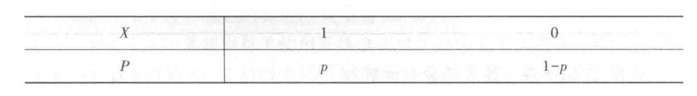
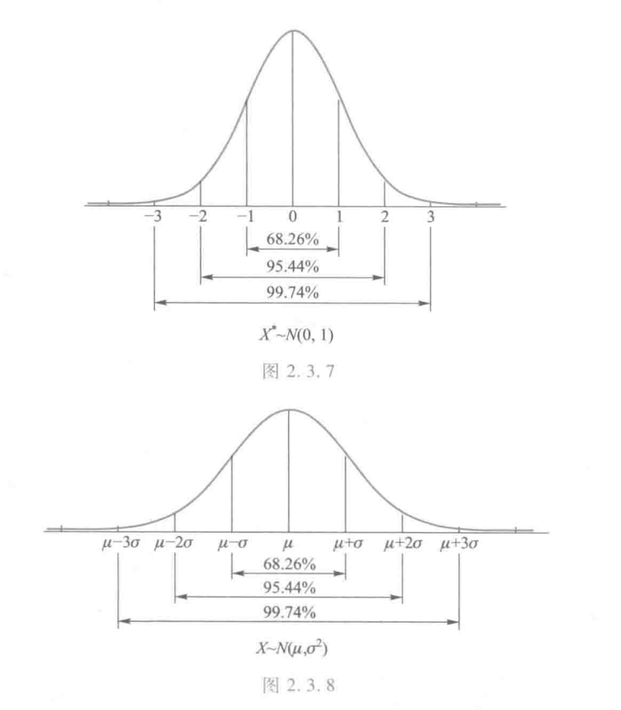
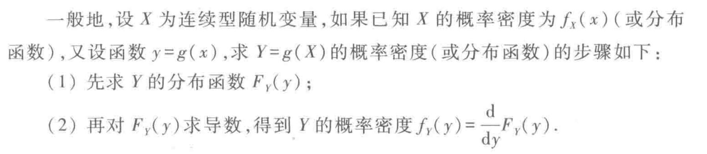
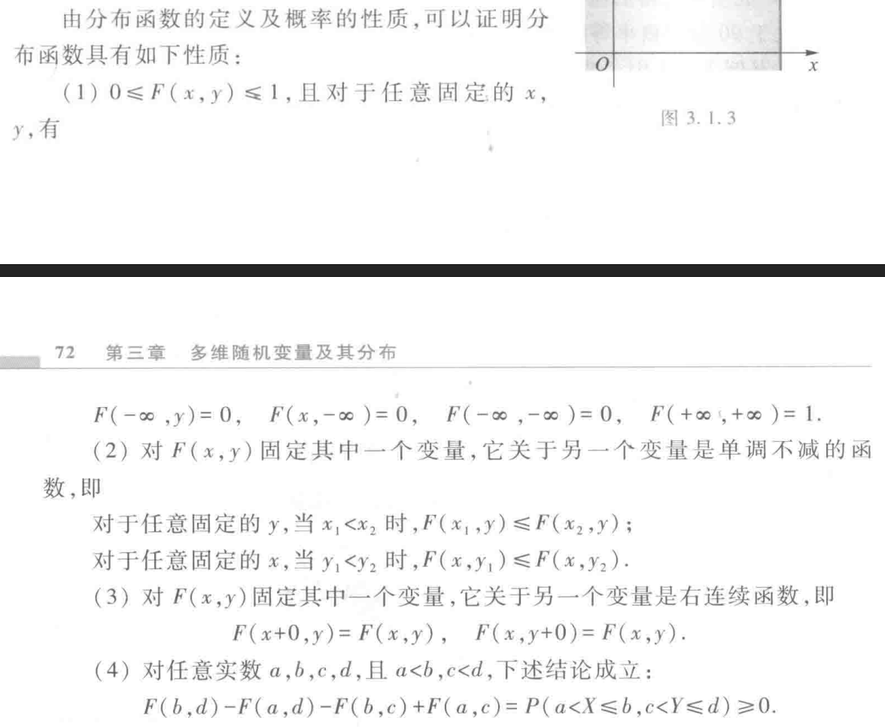
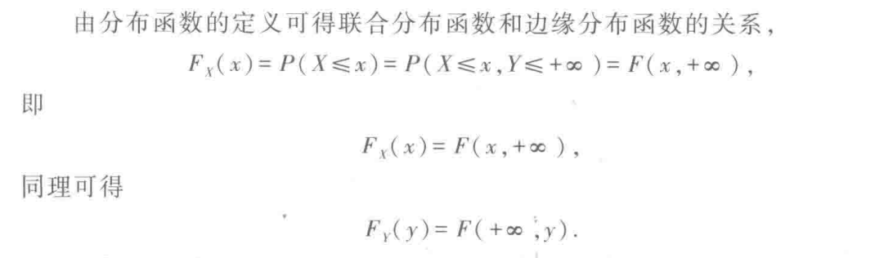
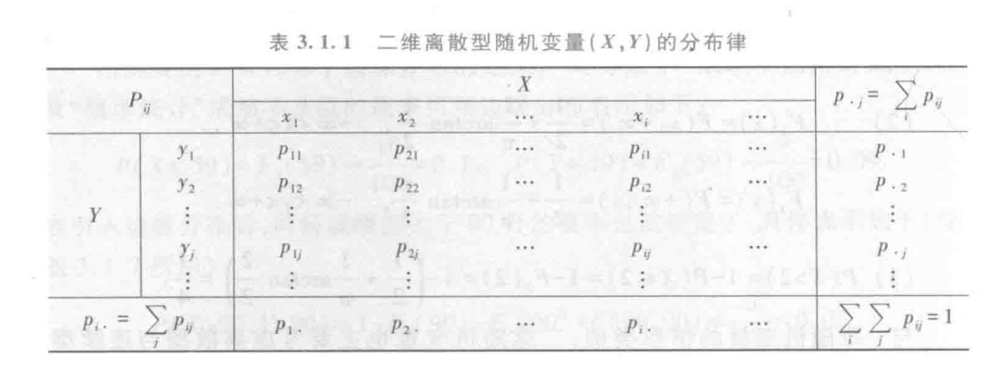
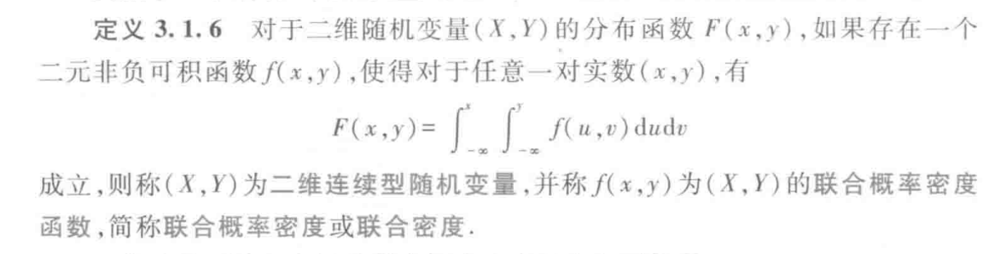
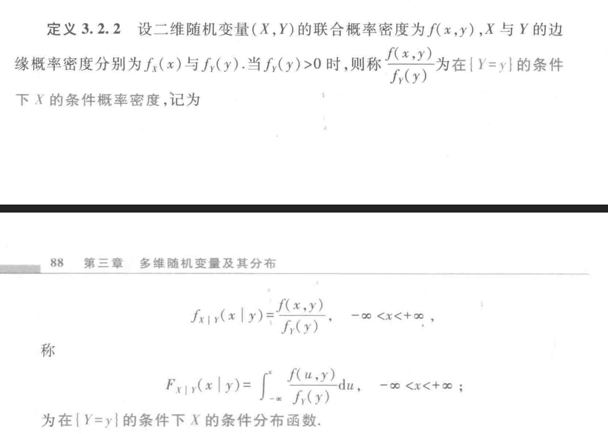

概率公理

分布率（分布列）
求离散型随机变量的分布律，需要画一个表，类似：

随机变量的分布函数
F(x)=P(X≤x)
0-1分布
P(X=k)={p,1−p,k=1k=0
也可以写成
P(X=k)=pk(1−p)1−kk=0,1
二项分布
P(X=k)=Cnkpk(1−p)n−kk=0,1,⋯,n
Poisson分布
[0,1]线段上每个点发生事件的概率密度为常数λ，发生事件个数随机变量为X，则有
P(X=k)=n→∞limCnkpk(1−p)n−k
（当n非常大的时候，我们可以认为每一个区间内只有可能发生一个事件）
其中p=nλ。
P(X=k)=n→∞limCnkpk(1−p)n−k=n→∞limk!n(n−1)(n−2)⋯(n−k+1)(nλ)k(1−nλ)n−k=n→∞limk!λk(1−nλ)n−k=n→∞limk!λk[(1−nλ)λn]λ=k!λke−λ
所以称P(X=k)=k!λke−λk=0,1,2,⋯为Poisson分布。
证明这个分布是分布列：
==k=0∑∞k!λke−λe−λk=0∑∞k!λke−λeλ=1
随机变量的概率密度函数
设X是⼀随机变量，F(x)是它的分布函数，若存在⼀个⾮负可积函数f(x)使得
F(x)=∫−∞xf(t)dt
可写作fX(x)，具有
- 非负性；
- 规范性：F(+∞)=1。
虽然概率密度函数不唯一，但是一般取F(x)的导数就好了。
几个概率密度函数
- 均匀分布
f(x)={0b−a1x≤aorx≥ba<x<b
- 指数分布
f(x)={λe−λx0x>0x≤0
此时
F(x)={1−e−λx0x>0x≤0
- 正态分布
f(x)=2πσ1e−2σ2(x−μ)2
其中μ为均值（位置参数），σ为标准差（形状参数）。
当μ=0,σ=1时，称为标准正态分布，记为N(0,1)。
令
Φ(x)=∫−∞x2π1e−2t2dt
对于N(μ,σ2)，有
P(a<X≤b)=Φ(σb−μ)−Φ(σa−μ)
所以当x=kσ+μ时，P(X≤x)=Φ(k)。

变量代换

多维随机变量联合分布

多维随机变量边缘分布

离散型的联合分布律

联合密度

条件概率密度

注意，这里认为y是定植
协方差
Cov(X,Y)=E[(X−E(X))(Y−E(Y))]
相关系数
ρXY=D(X)D(Y)Cov(X,Y)
协方差矩阵
矩阵$$c_{ij} = Cov(X_i, X_j)$$称为随机变量组(X1,X2,⋯,Xn)的协方差矩阵。
E,D,Cov的推导和总结
定义
E(X)D(X)cov(X,Y)={∫xf(x)dx∑xipi连续离散=E[(X−E(X))2]=E[(X−E(X))(Y−E(Y))]
方差恒等式
D(X)=E(X2)−E2(X)
证明
D(X)=E[(X−E(X))2]=E(X2)−2E[XE(X)]+E[E2(X)]=E(X2)−2E2(X)+E2(X)=E(X2)−E2(X)
协方差恒等式
cov(X,Y)=E(XY)−E(X)E(Y)
证明
cov(X,Y)=E[(X−E(X))(Y−E(Y))]=E(XY)−E(X)E(Y)−E(Y)E(X)+E(X)E(Y)=E(XY)−E(X)E(Y)
多元期望恒等式
E(X+Y)=E(X)+E(Y)
按照定义可得。
E(XY)=E(X)E(Y)+cov(X,Y)
根据协方差恒等式变形可得
多元方差恒等式
D(X+Y)=D(X)+D(Y)+2cov(X,Y)
证明
D(X+Y)=E[(X+Y)2]−E2(X+Y)=E(X2)+E(Y2)+2E(XY)−E2(X)−E2(Y)−2E(X)E(Y)=D(X)+D(Y)+2cov(X,Y)
正态分布
维度为 (d) 的多元正态分布 $ \mathcal N(\mu, \Sigma) $ 的概率密度函数为：
p(x)=(2π)d/2∣Σ∣1/21exp(−21(x−μ)⊤Σ−1(x−μ)),
其中
- x∈Rd，
- μ∈Rd 为均值向量，
- Σ∈Rd×d 为对称正定协方差矩阵。
若需要，我可以给你解释每项的含义或推导。
Chebyshev不等式
∀ε>0,P(∣X−μ∣≥ε)≤ε2σ2
证明：
Show More
根据方差的定义式：
σ2=D(X)=∫−∞∞(x−μ)2f(x)dx
所以有：
ε2σ2=∫−∞∞(εx−μ)2f(x)dx≥∫∣x−μ∣≥ε(εx−μ)2f(x)dx≥∫∣x−μ∣≥εf(x)dx=P(∣X−μ∣≥ε)
可以得到推论：
∀k>0,P(∣X−μ∣≥kσ)≤k21
依概率收敛
设Y1,Y2,⋯,Yn为随机变量序列，若对任意ε>0，都有$$\lim_{n\to \infty} P(\left|Y_n - X\right|\geq \varepsilon) = 0$$则称随机变量序列Yn依概率收敛于随机变量X，记为Ynn→∞PY。
其中X也可以是一个常数。
伯努利大数定律
设nA表示在n次独立重复的伯努利试验中事件A发生的次数，p=P(A)，则对于任意ε>0，都有$$\lim_{n\to \infty} P(\left|\frac{n_A}{n} - p\right| < \varepsilon) = 1$$
证明：
Show More
设Xn表示前n次命中次数的随机变量，则根据Chebyshev不等式有$$\begin{aligned}\lim_{n\to \infty} P(\left|\frac{n_A}{n} - p\right| < \varepsilon) &= \lim_{n\to\infty}P(\left|X_n - np\right|< n \varepsilon)\ &= \lim_{n\to\infty}[1 - \frac{np(1-p)}{(n\varepsilon)^2}]\ &= 1\end{aligned}$$
服从大数定律
若随机变量序列X1,X2,⋯,Xn满足某些条件，则对于任意ε>0，都有$$\lim_{n\to \infty} P(\left|\frac{X_1 + X_2 + \cdots + X_n}{n} - \frac{E(X_1) + E(X_2) + \cdots + E(X_n)}{n}\right| < \varepsilon) = 1$$则称该序列服从大数定律。
切比雪夫大数定律
设X1,X2,⋯,Xn为相互独立且方差存在、方差有共同的上界。则有$$\lim_{n\to \infty} P(\left|\frac{X_1 + X_2 + \cdots + X_n}{n} - \frac{E(X_1) + E(X_2) + \cdots + E(X_n)}{n}\right| < \varepsilon) = 1$$
证明：
Show More
令Yn=n1∑i=1nXi，则E(Yn)=n1∑i=1nE(Xi)，D(Yn)=n21∑i=1nD(Xi)≤nσm2。
所以$$\begin{aligned}\lim_{n\to \infty} P(\left|Y_n - E(Y_n)\right|<\varepsilon) &=\lim_{n\to\infty} [1-\frac{\sigma_m2}{n\varepsilon2}]\end{aligned}$$
Khintchine大数定律
设X1,X2,⋯,Xn为相互独立且具有相同分布的随机变量序列，且E(Xi)=μ，则对于任意ε>0，都有$$\lim_{n\to \infty} P(\left|\frac{X_1 + X_2 + \cdots + X_n}{n} - \mu\right| < \varepsilon) = 1$$
这个定理太屌了，课本说我证不了（方差不保证存在，也不保证有界）。
推广：
设X1,X2,⋯,Xn为相互独立且具有相同分布的随机变量序列，且E(Xik)=μk，则对于任意ε>0，都有$$\lim_{n\to \infty} P(\left|\frac{X_1^k + X_2^k + \cdots + X_n^k}{n} - \mu_k\right| < \varepsilon) = 1$$
大数定律总结
Chebyshev不等式的形象理解：对于存在方差的随机分布，偏离中心点较远的概率有上界，也就是说样本大概率分布在中心店附近；
伯努利大数定律的形象理解：频率收敛于概率，因为平均值的方差是随机变量的1/n倍，所以方差会逐渐缩小。
切比雪夫大数定律的形象理解：平均值的方差是随机变量的1/n倍，所以相互独立的随机变量只要方差有上界，在n变大是一定会收敛到0。
Khintchine大数定律的形象理解：任何独立同分布随机变量最后会收敛到均值（只要均值存在），不需要保证方差存在。
独立同分布的中心极限定理
设X1,X2,⋯,Xn为相互独立且具有相同分布的随机变量序列，且E(Xi)=μ,D(Xi)=σ2>0，则当n充分大时，随机变量$$Z_n = \frac{X_1 + X_2 + \cdots + X_n - n\mu}{\sigma\sqrt{n}}$$近似服从标准正态分布N(0,1)。
De Moivre-Laplace中心极限定理
设X服从参数为(n,p)的二项分布，则当n充分大时，随机变量$$Z = \frac{X - np}{\sqrt{np(1-p)}}$$近似服从标准正态分布N(0,1)。
中心极限定理总结
独立同分布的中心极限定理：对于任意存在μ和σ的分布，独立取多次，合随机变量会服从正态分布（有n的修正量）。
De Moivre-Laplace中心极限定理：取二项分布的特殊情况。
数理统计-样本
总体中抽n个个体（总体X的容量为n的样本）：(X1,X2,⋯,Xn)。
观测到的数据（样本观测值）：(x1,x2,⋯,xn)。
如果满足1. 同分布性；2. 独立性；则称为简单随机样本。
简单随机样本满足：
F(x1,x2,⋯,xn)=i=1∏nF(xi)
若概率密度为f(x)，则联合概率密度为
f(x1,x2,⋯,xn)=i=1∏nf(xi)
设(X1,X2,⋯,Xn)为来自总体X的简单随机样本，g(r1,r2,⋯,rn)为实值连续函数（不含除了自变量之外的未知参数），则称g(X1,X2,⋯,Xn)为统计量。若(x1,x2,⋯,xn)为样本值，则称g(x1,x2,⋯,xn)为统计量的样本值。
常用统计量：
- 样本均值X=n1∑i=1nXi，样本值记为x。
- 样本方差S2=n−11∑i=1n(Xi−X)2，样本值记为s2。（注意分母是n−1，而不是n）
- 样本标准差S=S2，样本值记为s。
- 样本的k阶原点距Mk=n1∑i=1nXik，样本值记为mk。
- 样本的k阶中心距(CM)k=n1∑i=1n(Xi−X)k，样本值记为(cm)k。
- 记(x1,x2,⋯,xn)的顺序统计量为x1∗≤x2∗≤⋯≤xn∗。定义X(k)=xk∗，称为样本的第k个顺序统计量，称Dn=X(n)−X(1)为样本极差，样本值记为dn。
α分位数
上侧α分位数xα定义为满足P(X>xα)=α的xα值。
如果f(x)是偶函数，定义双侧α分位数xα/2为满足P(∣X∣>xα/2)=α的xα/2值。
补充：特征函数法
假设X是一个随机变量，则我们称
φX(t)=E[eitX],t∈R
为X的特征函数
也就是说
φX(t)=∫−∞∞eitxf(x)dx
特征函数一定存在，且可以唯一确定分布。
若X和Y独立，可以验证特征函数满足（二重积分拆成两个积分）：
φX+Y(t)=φX(t)φX(t)
还有（变量代换，定义式）
φaX(t)=E(eitaX)=φX(at)
标准正态分布的特征函数：
φX(t)=∫eitx2π1e−x2/2dx=2πe−t2∫e−(x−it)2/2d(x−it)=e−t2/2
任意正态分布的特征函数：
φY(t)=φσX+μ(t)=e−σ2t2/2×eitμ=eitμ−σ2t2/2
常用统计量的分布
正态分布
若X1,X2,⋯,Xn相互独立，且Xi∼N(μi,σi2)，则有：
i=1∑naiXi∼N(i=1∑naiμi,i=1∑nai2σi2)
特别地，当Xi∼N(μ,σ2)时，有
X∼N(μ,nσ2)
且有以下结论
两个服从正态分布的随机变量X∼N(μ1,σ1)和Y∼N(μ2,σ2)，且相互独立，有
X+Y∼N(μ1+μ2,σ1+σ2)
以上结论都可以用特征函数法（傅立叶变换）证明。
证明
φX(t)=φ∑Xi(t/n)=[ϕX(t/n)]n=e(itμ/n−2n2σ2t2)⋅n=eitμ−(nσ)2t2/2
所以φX(t)∼N(μ,(nσ)2)。
另一个带入特征函数是显然的。
此外，正态分布是唯一具有方差和均值独立性质的分布。
χ2分布
设X1,X2,⋯,Xn相互独立，且Xi∼N(0,1)，则随机变量$$Y = \sum_{i=1}^n X_i^2$$服从自由度为n的χ2分布，记为Y∼χ2(n)。
其中卡方分布的概率密度函数为
fχ2(x)={2n/2Γ(n/2)1e−x/2x2n−10x>0else
性质：
- E(χ2)=n，D(χ2)=2n。
- 若Y1∼χ2(n1),Y2∼χ2(n2)，则Y1+Y2∼χ2(n1+n2)。
- n充分大时，χ2(n)近似服从正态分布N(n,2n)。
t分布
设X∼N(0,1),Y∼χ2(n)，且X和Y相互独立，则随机变量$$T = \frac{X}{\sqrt{Y/n}}$$服从自由度为n的t分布，记为T∼t(n)。
记T∼t(n)，则概率密度函数为
ft(x)=nπΓ(n/2)Γ((n+1)/2)(1+nx2)−(n+1)/2
性质：
n→∞时，t(n)近似服从正态分布N(0,1)。
F分布
设U∼χ2(m), V∼χ2(n)，且U和V相互独立，则随机变量$$F = \frac{U/m}{V/n}$$服从自由度为(m,n)的F分布，记为F∼F(m,n)。
记F∼F(m,n)，则概率密度函数为
fF(t)={Γ(m/2)Γ(n/2)Γ((m+n)/2)(nm)m/2tm/2−1(1+nmt)−(m+n)/20t>0else
性质：
- 若F∼F(m,n)，则F1∼F(n,m)。
- 若F(m,n)的上侧α分位数为Fα(m,n)，则F1−α(m,n)=Fα(n,m)1。
总结
χ2分布是n个独立标准正态分布的随机变量平方和；可以用于刻画正态分布样本的方差；
t分布用于刻画多个独立正态分布随机变量的均值，在方差未知的情况下（用统计方差代替）；
F分布用于刻画两个样本的方差比。
正态总体的抽样分布
单个正态总体的抽样分布
设X1,X2,⋯,Xn为来自总体X∼N(μ,σ2)的简单随机样本。则有：
- X∼N(μ,nσ2)。
- S2∼n−1σ2χ2(n−1)。
- σ/nX−μ∼N(0,1)。
- σ2(n−1)S2∼χ2(n−1)。
- S/nX−μ∼t(n−1)。
证明
- 已经证明过了;
- S2=n−11∑(Xi−X)2=n−11(∑(Xi−μ)2+2∑(Xi−μ)(μ−X)+∑(μ−X)2)=n−11(∑(Xi−μ)2−n(X−μ)2)，RHS的左半边服从σ2χ2(n)，右半边服从−σ2chi2(1)，LHS和RHS的右半边独立，反用可加性（使用可减性，特征函数唯一），S2∼n−1σ2χ2(n−1).
- 同1；
- 同2；
- S/nX−μ=σnσ2(n−1)S2/(n−1)σ/nX−μσn=σ2(n−1)S2/(n−1)σ/nX−μ∼t(n−1)
两个正态总体的抽样分布
设X1,X2,⋯,Xn和Y1,Y2,⋯,Ym为来自总体X∼N(μX,σX2)和Y∼N(μY,σY2)的简单随机样本，且X和Y相互独立。则有：
- S22S12/σY2σX2∼F(n−1,m−1)。
- X−Y∼N(μX−μY,nσX2+mσY2)。
- σX=σY=σ时，n1+m1n+m−2(n−1)S12+(m−1)S22(X−Y)−(μX−μY)∼t(n+m−2)。
证明
- 就是定义；
- 正态函数性质；
- 改成X+Y也是同样的分布；按照定义可以推
⎩⎪⎨⎪⎧nσ2+mσ2X−Y−(μX−μY)∼N(0,1)σ2n+m−2n+m−2(n−1)S12+(m−1)S22∼χ2(n+m−2)
点估计
用统计量估计参数，叫做点估计
频率替代法
用频率估计概率
矩估计法
有k个未知参数，就用k阶原点矩来估计
先求出k个原点矩（根据得到的数据），再反解出参数。
用θ^矩表示。
最大似然估计法
先求出似然函数L（所有概率乘起来，是xi的函数）；
然后再求导，求出最大值，最大值点就是似然估计值。
求导前先观察单调性。
用θ^极大表示。
估计量的评价标准
无偏性
θ^可以写成X1,X2,⋯,Xn的函数，所以θ^也是一个随机变量。
对于θ^这个随机变量的均值E(θ^)，如果满足
E(θ^)=θ
则认为θ^是无偏估计量。
这里的θ是未知参数。
有效性
设θ^1=θ^1(X1,X2,⋯,Xn)和θ^2=θ^2(X1,X2,⋯,Xn)都无偏，则如果有
D(θ^1)<D(θ^2)
则认为θ^1比θ^2有效。
因为这个估计方法震荡更小。
估计量方差下界
Rao-Cramer不等式：
D(θ^)≥I(θ)=nE[(∂θ∂lnf(x;θ))2]1>0
前提条件是θ^无偏。
证明
由于
E(θ^)=∫θ^(x)f(x;θ)dx=θ
可以得出
D(θ^)=E[(θ^−θ)2]=∫(θ^−θ)2f(x;θ)dx
而根据科西不等式
≥[∫(θ^−θ)2f(x;θ)dx][∫f(x;θ)(∂θ∂f)2dx](∫(θ^−θ)(∂θ∂f)dx)2
有LHS的右半边
∫f(x;θ)(∂θ∂f)2dx=∫[∂θ∂lnf(x;θ)]2f(x;θ)dx=E[(∂θ∂lnf(x;θ))2]
而
RHS=∂θ∂∫θ^f(x;θ)dx−θ∂θ∂∫f(x;θ)dx=∂θ∂θ−0=1
令
I(θ)=E[(∂θ∂lnf(x;θ))2]1=nE[(∂θ∂lnf(x;θ))2]1
则
D(θ^)≥I(θ)
其中I(θ)被称为Fisher信息量。
如果某个无偏估计量的方差达到了下界I(θ)，则是有效估计量（仅是充分条件，有可能不存在估计量达到下界）。
一致性
如果对于任意ε>0，都有
n→∞limP(∣∣∣∣θ^n−θ∣∣∣∣<ε)=1
则θ^n是θ的一致估计量。
性质
如果θ^无偏，且
n→∞limD(θ^)=0
则θ^n是一致估计量。
证明
Chebyshev不等式
P(∣∣∣∣θ^n−θ∣∣∣∣≥ε)≤εD(θ^n)
令n趋于无穷即可。
区间估计
若对于任意α∈(0,1)，存在θ^1和θ^2两个关于X=(X1,X2,⋯,Xn)的函数，满足P(θ^1<θ<θ^2)=1−α，则称(θ^1,θ^2)为θ的置信度为1−α的置信区间。θ1被称为置信下限，θ2被称为置信上限。
单个正态总体参数的置信区间
设总体X∼N(μ,σ2)，(X1,X2,⋯,Xn)是来⾃总体的⼀个样本，1−α是给定的置信度。
对μ的区间估计
σ已知
则可以令U=σ/nX−μ，则U∼N(0,1)。令U为枢轴量。
令uα/2为标准正态分布的上α/2分位点，即
P(U>uα/2)=α/2
则有P(−uα/2<U<uα/2)=1−α变化可得
P(X−nuα/2σ<μ<X+nuα/2σ)=1−α
即置信区间为$$(\overline X - u_{\alpha / 2}\frac{\sigma}{\sqrt n}, \overline X + u_{\alpha/2}\frac{\sigma}{\sqrt n})$$
σ未知
根据S∼n−1σ2χ2(n−1)可以得到
U=S/nX−μ∼t(n−1)
则
P(−tα/2(n−1)<S/nX−μ<tα/2(n−1))=1−α
从而得到
P(X−nStα/2(n−1)<μ<X+nStα/2(n−1))=1−α
对σ的区间估计
μ已知
U=∑σ2(Xi−μ)2
则U∼χ2(n)，有
P(χ1−α/22(n)<σ21∑(Xi−μ)2<χα/22(n))=1−α
即
P(χα/22(n)∑(Xi−μ)2<σ2<χ1−α/22(n)∑(Xi−μ)2)=1−α
μ未知
U=σ2n−1S2∼χ2(n−1)
有
P(χ1−α/22(n−1)<σ2n−1S2<χα/22(n−1))
即
P(χα/22(n−1)(n−1)S<σ2<χ1−α/22(n−1)(n−1)S)
两个正态总体参数的置信区间
用前一章知识也可以类似解决。
假设检验
原假设：H0，做出的假设，比如“μ=7.5”。
备择假设：H1，否命题，如“μ=7.5”。
拒绝域：一个集合，比如说W={(X1,X2,⋯,Xn)∣∣∣∣X−7.5∣∣∣>C}.
检验统计量：构造的随机变量，比如说U=σ/36X−7.5∼N(0,1)，然后找到P(∣U∣>k)=α，就能求出拒绝域。
双侧检验：拒绝域为两侧；
单侧检验：拒绝域在一侧；
显著性水平：α使得H0成立时，P((X1,X2,⋯,Xn)∈W)≤α。
错误
第I类错误
“弃真”错误，发生了小概率事件，放弃了H0而接受了H1，概率为
P(拒绝H0∣H0为真)≤α
第II类错误
“存假”错误，H0错误但是接受了H0，记
P(接受H0∣H0为假)=β
单个正态总体参数均值的假设检验
方差已知
显著差异
H0:μ=μ0,H1:μ=μ0
假设H0成立，构造$$U = \frac{\overline X - \mu_0}{\sigma/\sqrt n}\sim N(0, 1)$$
拒绝域
∣∣∣∣∣σ/nX−μ0∣∣∣∣∣>uα/2
显著偏小
H0:μ≥μ0,H1:μ<μ0
假设H0成立，构造
U=σ/nX−μ∼N(0,1)
有
P(σ/nX−μ<−uα)=α≥P(σ/nX−μ0<−uα)
所以说拒绝域
σ/nX−μ0<−uα
显著偏大
σ/nX−μ0>uα
方差未知
使用$$U = \frac{\overline X - \mu_0}{S/\sqrt n}\sim t(n - 1)$$
显著差异
∣∣∣∣∣S/nX−μ0∣∣∣∣∣>tα/2(n−1)
显著偏小
S/nX−μ0<−tα(n−1)
显著偏大
S/nX−μ0>tα(n−1)
单个正态总体参数方差的假设检验
均值已知
显著差异
。。。都和前面差不多，不玩了
两个正态总体参数的假设检验
非正态总体参数的假设检验
随机事件概率p的假设检验
对于H0:p=p0，H1:p=p0，假设H0成立，有
Xi∼B(1,p)
且
{E(X)=p0D(X)=np0(1−p0)
根据中心极限定理
U=p0(1−p0)/nX−p0∼近似N(0,1)
拒绝域为
∣∣∣∣∣∣p0(1−p0)/nX−p0∣∣∣∣∣∣>uα/2
其他两类同理。
非正态总体的大样本检验
大样本，近似正态。
非参数检验
{H0:X的分布函数是F(x)H1:X的分布函数不是F(x)
Pearson定理
如果H0为真，那么不管F(x)是什么，n充分大时，统计量χ2总是服从于自由度为k−r−1的χ2分布，即
χ2=i=1∑knpi(ni−npi)2∼近似χ2(k−r−1)
其中k为划分数，r为F(x)中未知参数的个数。
对于式子npi(ni−npi)2，可以令p^i=nni，则可以改写为$$\frac{(n_i - np_i)^2}{np_i} = \left(\frac{\hat p_i - p_i}{\sqrt{p_i/n}}\right)^2$$
这个玩意是怎么来的呢？
观察到(np^1,np^2,⋯,np^n)满足多项式分布，且有
⎩⎪⎪⎨⎪⎪⎧E(p^i)=piD(p^i)=pi(1−pi)/ncov(p^i,p^j)=−pipj/n
当n→∞时，多项式分布趋近于正态分布，有
n⎝⎜⎜⎜⎜⎛p^1−p1p^2−p2⋮p^k−pk⎠⎟⎟⎟⎟⎞∼N⎝⎜⎜⎜⎜⎛0,⎝⎜⎜⎜⎜⎛p1(1−p1)−p2p1⋮−pkp1−p1p2p2(1−p2)⋮−p2pk⋯⋯⋱⋯−p1pk−p2pk⋮pk(1−pk)⎠⎟⎟⎟⎟⎞⎠⎟⎟⎟⎟⎞
可以再化为
n⎝⎜⎜⎜⎜⎜⎜⎛p1p^1−p1p2p^2−p2⋮pkp^k−pk⎠⎟⎟⎟⎟⎟⎟⎞∼N⎝⎜⎜⎜⎜⎛0,⎝⎜⎜⎜⎜⎛1−p1−p2p1⋮−pkp1−p1p21−p2⋮−p2pk⋯⋯⋱⋯−p1pk−p2pk⋮1−pk⎠⎟⎟⎟⎟⎞⎠⎟⎟⎟⎟⎞
正态分布的协方差矩阵可以进一步写为
C=E−ppT
其中
p=(p1,p2,⋯,pk)T
所以有∥p∥=1
可以验证rank(C)=k−1，后续推导略。